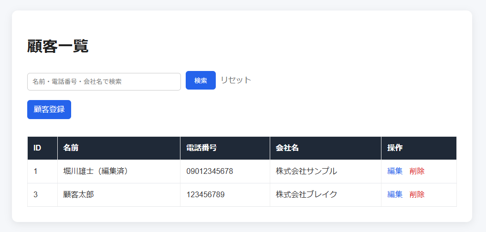
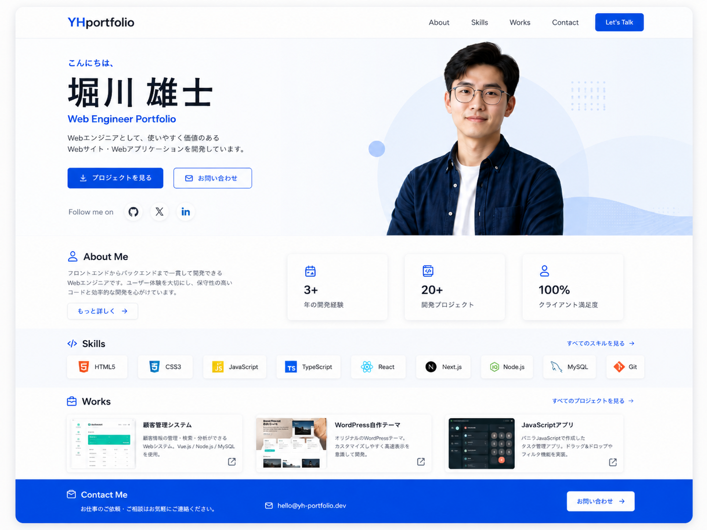
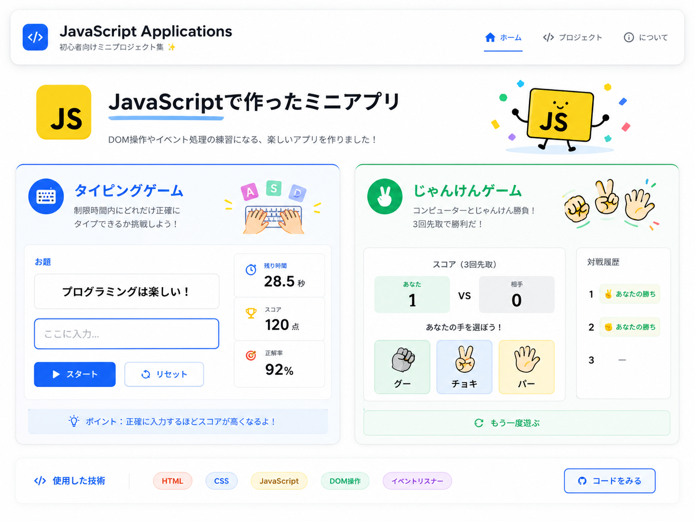

PHP / MySQL
顧客管理システム
PHP・MySQLを使用した顧客管理システムです。 顧客登録、一覧表示、編集、削除、検索機能を実装しました。
- CRUD機能
- 検索機能
- PDOによるデータベース接続
Web Engineer Portfolio
20年以上の営業・事業運営経験で培った課題解決力と調整力を活かし、 HTML/CSS、JavaScript、PHP、WordPress、MySQLを中心に学習しています。
営業、事業運営、市場流通業務など幅広い業務に従事してきました。 現在はWebエンジニアへの転職を目指し、PHP・MySQLを用いた顧客管理システムや、 GitHub Pagesを利用したポートフォリオサイト制作に取り組んでいます。

PHP / MySQL
PHP・MySQLを使用した顧客管理システムです。 顧客登録、一覧表示、編集、削除、検索機能を実装しました。
WordPress / PHP
HTMLからWordPressテーマ化を行い、PHPによるテンプレート分割、 カスタム投稿、記事一覧・詳細ページの実装を通して WordPressテーマ開発の基礎を学びました。

HTML / CSS / GitHub Pages
転職活動用に制作したポートフォリオサイトです。 プロフィール、スキル、制作実績、GitHubリンクを掲載しています。

JavaScript
タイピングゲーム、じゃんけんゲームを制作。 DOM操作、イベント処理、条件分岐などを学習しました。
GitHubにて制作物を公開しています。コードや学習成果はこちらからご確認いただけます。